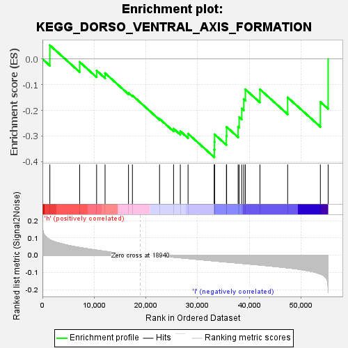

| | | Dataset | VCAN.VCAN.cls#h_versus_l.VCAN.cls#h_versus_l_repos |
| Phenotype | VCAN.cls#h_versus_l_repos |
| Upregulated in class | l |
| GeneSet | KEGG_DORSO_VENTRAL_AXIS_FORMATION |
| Enrichment Score (ES) | -0.3829186 |
| Normalized Enrichment Score (NES) | -1.1790123 |
| Nominal p-value | 0.23137255 |
| FDR q-value | 1.0 |
| FWER p-Value | 0.988 |
Table: GSEA Results Summary

Fig 1: Enrichment plot: KEGG_DORSO_VENTRAL_AXIS_FORMATION
Profile of the Running ES Score & Positions of GeneSet Members on the Rank Ordered List
| SYMBOL | TITLE | RANK IN GENE LIST | RANK METRIC SCORE | RUNNING ES | CORE ENRICHMENT | | 1 | KRAS | na | 1433 | 0.089 | 0.0535 | No |
| 2 | GRB2 | na | 7203 | 0.044 | -0.0116 | No |
| 3 | PIWIL3 | na | 10476 | 0.029 | -0.0452 | No |
| 4 | NOTCH1 | na | 12112 | 0.022 | -0.0552 | No |
| 5 | PIWIL2 | na | 16646 | 0.006 | -0.1318 | No |
| 6 | ETV7 | na | 17407 | 0.004 | -0.1421 | No |
| 7 | CPEB1 | na | 22653 | -0.005 | -0.2330 | No |
| 8 | MAP2K1 | na | 25365 | -0.012 | -0.2715 | No |
| 9 | SPIRE1 | na | 26670 | -0.015 | -0.2813 | No |
| 10 | NOTCH4 | na | 28167 | -0.020 | -0.2910 | No |
| 11 | MAPK1 | na | 33245 | -0.034 | -0.3530 | Yes |
| 12 | NOTCH3 | na | 33278 | -0.034 | -0.3235 | Yes |
| 13 | ETV6 | na | 33291 | -0.034 | -0.2936 | Yes |
| 14 | FMN2 | na | 35583 | -0.040 | -0.2996 | Yes |
| 15 | MAPK3 | na | 35627 | -0.040 | -0.2647 | Yes |
| 16 | ETS2 | na | 37849 | -0.046 | -0.2641 | Yes |
| 17 | EGFR | na | 38054 | -0.046 | -0.2265 | Yes |
| 18 | PIWIL4 | na | 38560 | -0.048 | -0.1932 | Yes |
| 19 | NOTCH2 | na | 38943 | -0.049 | -0.1567 | Yes |
| 20 | SOS2 | na | 39248 | -0.050 | -0.1181 | Yes |
| 21 | ETS1 | na | 42078 | -0.057 | -0.1184 | Yes |
| 22 | SOS1 | na | 47435 | -0.074 | -0.1497 | Yes |
| 23 | PIWIL1 | na | 53762 | -0.109 | -0.1671 | Yes |
| 24 | SPIRE2 | na | 55267 | -0.218 | 0.0000 | Yes |
Table: GSEA details [plain text format]
Fig 2: KEGG_DORSO_VENTRAL_AXIS_FORMATION
Blue-Pink O' Gram in the Space of the Analyzed GeneSet
Fig 3: KEGG_DORSO_VENTRAL_AXIS_FORMATION: Random ES distribution
Gene set null distribution of ES for KEGG_DORSO_VENTRAL_AXIS_FORMATION